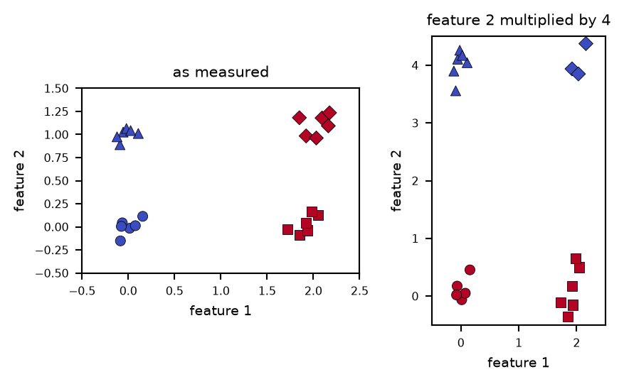
Unsupervised learning: clustering
Introduction to Artificial Intelligence and Machine Learning 4
Jiabao Xu
Jiabao.Xu@glasgow.ac.uk
Massimo Vassalli
massimo.vassalli@glasgow.ac.uk
Learning without labels
Every method so far learned from labelled data, pairs \((\mathbf{x}_i, y_i)\). In unsupervised learning there is no \(y\): only \(\mathbf{X}\), and the task is to find structure in it.
| Goal | Question | Methods |
|---|---|---|
| dimensionality reduction | which directions carry the information? | PCA (5b), t-SNE (today) |
| clustering | which samples belong together? | k-means, hierarchical, DBSCAN, Gaussian mixtures (today) |
| density estimation | where are the data likely? | Gaussian mixtures (today) |
| anomaly detection | which samples do not fit? | Isolation Forest, local outlier factor (today) |
Note
PCA (5b) found continuous structure, directions; clustering looks for discrete structure, groups. Both rest on distances between samples (7a). As in 7a, imports and data are in a hidden cell: wine (4a, 5b), with the cultivars kept aside to check the results, and four 2-D toy shapes.
What is a cluster?
A cluster is a group of samples more similar to each other than to the samples of other groups. But “similar” needs a distance, and the distance depends on the units of the features.
On the right: four small groups of points (one marker shape each), split into two clusters by k-means (colours; the method comes next). As measured, the groups are 1 apart vertically and 2 apart horizontally, so the clusters are left and right. Now multiply feature 2 by 4 (as if it were recorded in other units): the vertical gap becomes 4, larger than the horizontal one, and the same points split into top and bottom.
Same data, two answers: a clustering is only defined once the distance is, and scaling (3b) is part of that choice.
Two kinds of clustering: hard, each sample in exactly one cluster (k-means, hierarchical, DBSCAN); soft, each sample with a degree of membership in every cluster (Gaussian mixtures).
Distances, again
The distances of 7a, Minkowski with \(p = 2\) (Euclidean) above all, treat every direction alike. When features are correlated, the Mahalanobis distance measures differences in units of the data’s own spread: \[ d_M(\mathbf{x}, \mathbf{x}') = \sqrt{(\mathbf{x} - \mathbf{x}')^\mathsf{T}\,\boldsymbol\Sigma^{-1}(\mathbf{x} - \mathbf{x}')} \] with \(\boldsymbol\Sigma\) the covariance matrix of 5b.
- \(\boldsymbol\Sigma = \mathbf{I}\): the Euclidean distance
- \(\boldsymbol\Sigma\) diagonal, with variances \(\sigma_j^2\): the features are uncorrelated, \(\boldsymbol\Sigma^{-1}\) is diagonal with entries \(1/\sigma_j^2\), and \(d_M^2 = \sum_j (x_j - x'_j)^2/\sigma_j^2\): each difference is measured in standard deviations of its feature. This is the Euclidean distance after standardising (3b)
- \(\boldsymbol\Sigma\) full: correlated features; the next slide shows what \(\boldsymbol\Sigma^{-1}\) does, with the PCA of 5b
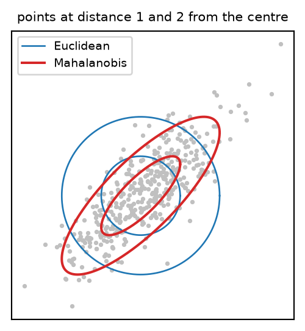
Along the direction where the data are spread, a large difference is normal and the Mahalanobis distance is small; across it, a small difference is already unusual. Gaussian mixtures (later) use exactly this distance, with one \(\boldsymbol\Sigma\) per cluster.
Mahalanobis distance and PCA
In 5b, \(\boldsymbol\Sigma = \mathbf{V}\boldsymbol\Lambda\mathbf{V}^{T}\): the columns of \(\mathbf{V}\) are the principal axes \(\mathbf{v}_j\) (also the right singular vectors of \(\mathbf{X}_c\), with \(\lambda_j = s_j^2/(n-1)\)), and \(\boldsymbol\Lambda\) holds the variances \(\lambda_j\) of the scores. \(\mathbf{V}\) is orthogonal, \(\mathbf{V}^{-1} = \mathbf{V}^{T}\), so \[ \boldsymbol\Sigma^{-1} = \mathbf{V}\boldsymbol\Lambda^{-1}\mathbf{V}^{T} \] and, with the scores \(\mathbf{z} = \mathbf{V}^{T}\mathbf{x}\), \[ d_M^2 = (\mathbf{x} - \mathbf{x}')^\mathsf{T}\mathbf{V}\boldsymbol\Lambda^{-1}\mathbf{V}^{T}(\mathbf{x} - \mathbf{x}') = \sum_{j=1}^{d}\frac{(z_j - z'_j)^2}{\lambda_j} \]
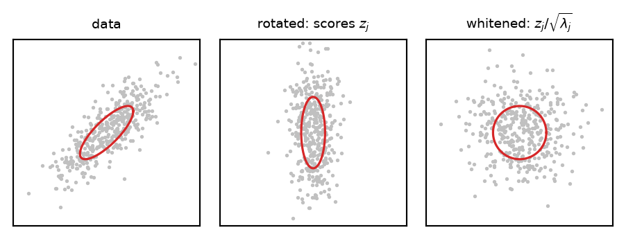
Read the sum from right to left: rotate to the principal axes (the scores, uncorrelated), divide each score by its standard deviation \(\sqrt{\lambda_j}\), then take the ordinary Euclidean distance. This is whitening: the data become a round cloud of unit variance, and the Mahalanobis ellipse (red) a circle. Directions of small variance (small \(\lambda_j\)) get a large weight: a small step across the cloud counts as much as a large step along it.
Four shapes
The methods of today, on four 2-D problems whose groups we know (colours: the true groups; each set is standardised):
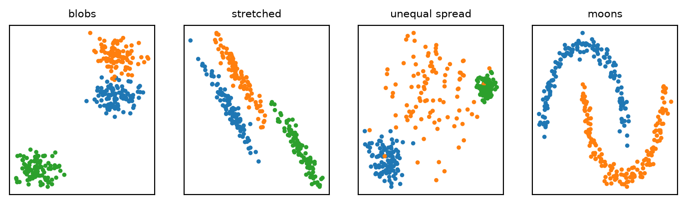
Round groups of equal size; the same groups stretched along a diagonal; groups of very different spread; two interleaved half-moons. Each shape will defeat at least one method: every clustering method has a built-in idea of what a cluster looks like.
k-means
Choose the number of clusters \(k\). Describe each cluster \(G_\ell\) by a centroid \(\boldsymbol\mu_\ell\), and look for the partition that makes the samples closest to their centroids. With memberships \(r_{i\ell} = 1\) if sample \(i\) is in cluster \(\ell\) and 0 otherwise, the loss is the inertia (within-cluster sum of squares): \[ J = \sum_{i=1}^{n}\sum_{\ell=1}^{k} r_{i\ell}\,\lVert\mathbf{x}_i - \boldsymbol\mu_\ell\rVert^2 \] As (H, L, A): model, \(k\) centroids, each sample assigned to the nearest; strategy, minimise \(J\) over the centroids and the memberships; algorithm, alternating minimisation (next slide).
Finding the best partition exactly is NP-hard: the number of ways of splitting \(n\) samples into \(k\) groups grows like \(k^n\). But \(J\) is easy to minimise over one set of unknowns when the other is fixed:
- centroids fixed: each term involves one sample; the best \(r_{i\ell}\) puts sample \(i\) in the cluster with the nearest centroid
- memberships fixed: \(J\) is a sum of squares in \(\boldsymbol\mu_\ell\); setting \(\dfrac{\partial J}{\partial\boldsymbol\mu_\ell} = -2\sum_i r_{i\ell}(\mathbf{x}_i - \boldsymbol\mu_\ell) = \mathbf{0}\) gives \(\boldsymbol\mu_\ell = \dfrac{\sum_i r_{i\ell}\,\mathbf{x}_i}{\sum_i r_{i\ell}}\), the mean of the cluster (hence the name)
Lloyd’s algorithm
Alternate the two steps (Lloyd, 1957): start from \(k\) centroids, then repeat assign (each sample to the nearest centroid) and update (each centroid to the mean of its samples) until nothing changes. By hand, on the blobs:
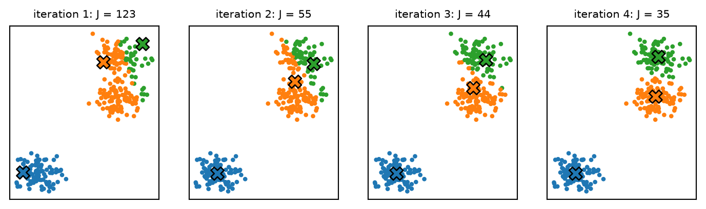
Crosses: the centroids used for each assignment. Two of the three starting centroids lie in the same group, so the first assignment splits it and leaves two groups together; in a few iterations the centroids move apart and \(J\) drops from 123 to 35.
Convergence and local minima
Each step minimises \(J\) over one set of unknowns, so \(J\) never increases; there are finitely many partitions, so the algorithm stops. But it stops at a local minimum, which depends on the start.
Remedies in KMeans:
n_init: run several times from different starts, keep the lowest \(J\)- k-means++ seeding (Arthur and Vassilvitskii, 2007), the default: the first centroid is a random sample; each next one is a sample drawn with probability proportional to its squared distance from the nearest centroid already chosen. Starts spread out, and are rarely bad
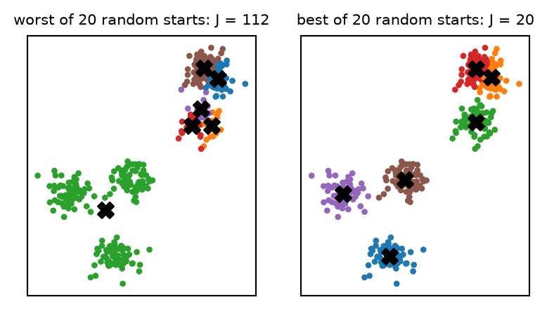
Six well-separated groups, \(k = 6\), twenty runs from random starts: 5 of them find the six groups; the worst puts four centroids in the two upper groups and a single one for the three lower groups. Both are stable points of the algorithm, where no single step can improve \(J\); only the comparison of \(J\) tells them apart.
k-means on wine
The 13 measurements of 178 wines, with and without standardisation:
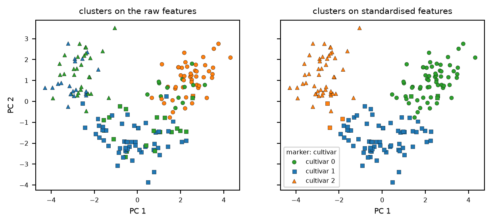
Each wine is drawn at its first two PCA scores (5b), with its cultivar as the marker shape and its cluster as the colour; the cultivars were never given to k-means. On the raw features, proline (in the hundreds) dominates the distance and the clusters cut across the cultivars. Standardised, the three clusters line up with the three cultivars, which occupy three regions of the score plot: the chemistry separates them on its own.
Clusters and cultivars
A table makes the comparison exact: wines of each cultivar (rows) in each cluster (columns); cluster numbers are arbitrary.
raw features
cluster 0 1 2
cultivar
0 0 46 13
1 50 1 20
2 19 0 29
standardised
cluster 0 1 2
cultivar
0 0 0 59
1 65 3 3
2 0 48 0
Raw: every cultivar is spread over two or three clusters. Standardised: each cluster is almost one cultivar, and only 6 of the 178 wines fall in a cluster dominated by another cultivar. Such a table needs the labels, so it is a check of the method, not part of using it; later we turn it into a single number, the adjusted Rand index.
How many clusters? The elbow
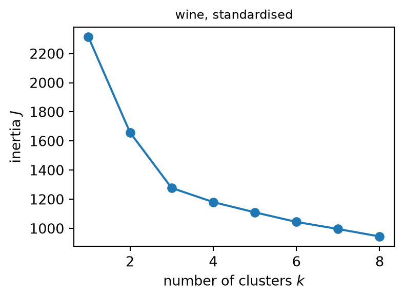
\(J\) always decreases with \(k\): with \(k = n\) every sample is its own centroid and \(J = 0\). So \(J\) cannot choose \(k\) by minimisation, as the training error could not choose a model in 4b. The elbow heuristic looks for the \(k\) after which the decrease slows down: here a bend at \(k = 3\), but elbows are often unclear. Domain knowledge, when available, is the best guide.
The silhouette
How well does each sample sit in its cluster? For sample \(i\) (Rousseeuw, 1987):
- \(a_i\): its mean distance to the other members of its own cluster
- \(b_i\): its mean distance to the members of the nearest other cluster
\[ s_i = \frac{b_i - a_i}{\max(a_i, b_i)} \in [-1, 1] \] \(s_i\) near 1: much closer to its own cluster than to any other; near 0: on the border between two; negative: closer, on average, to another cluster than to its own, so probably misassigned.
(np.float64(-0.8490382869862287),
np.float64(3.385507834365913),
np.float64(-0.5146398002122091),
np.float64(0.968507433227793))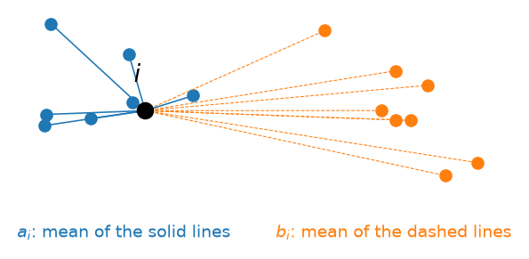
The silhouette is an internal criterion: it uses only \(\mathbf{X}\) and the clusters, never labels, so it can be used for real.
Reading the silhouette
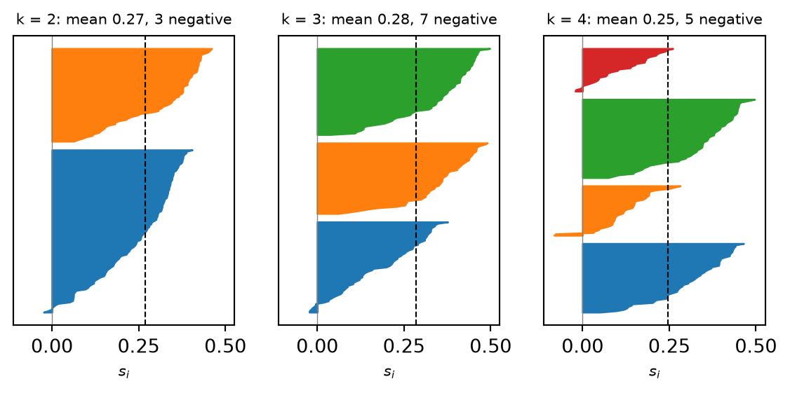
Wine, standardised, k-means with \(k\) = 2, 3, 4: one horizontal bar per sample, sorted within each cluster. The mean (dashed) is the single number used to compare values of \(k\): here highest at \(k = 3\). But the plot shows more than the mean: the thickness of each block is the size of the cluster, a block that stays below the mean is a weak cluster, and samples with \(s_i < 0\) (7 at \(k = 3\)) are the ones to inspect. The level matters too: a mean silhouette below about 0.5 signals weak structure, as here, where the cultivars overlap in 13 dimensions even though k-means recovers them well.
Where k-means fails
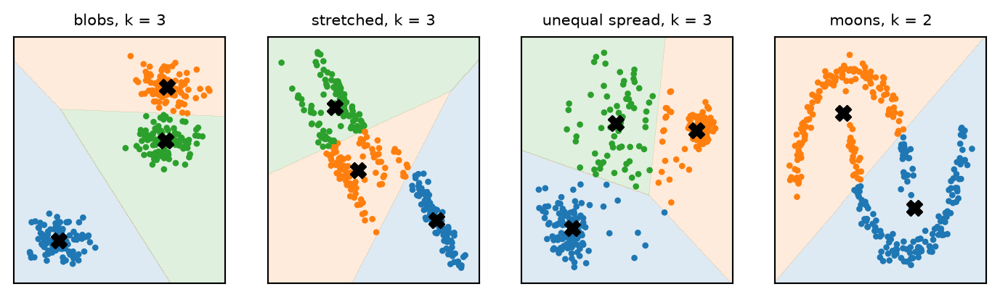
k-means assigns each point to the nearest centroid, so its clusters are the Voronoi cells of the centroids (shaded): convex regions separated by straight lines halfway between centroids. Minimising squared distances to a centre favours round clusters of similar size. It works on the blobs; it cuts the stretched groups across, gives the wide group’s edges to its neighbours, and cannot follow the moons. The other methods of today relax these assumptions, one at a time.
Hierarchical clustering
Agglomerative clustering builds a whole hierarchy of clusterings, bottom up:
- start with \(n\) clusters, one sample each
- merge the two closest clusters
- repeat until a single cluster is left
The result is a tree of merges, and any number of clusters can be read from it afterwards. The key choice is the distance between two clusters \(A\) and \(B\), the linkage:
- single: the closest pair, \(\min_{i \in A, j \in B} d(\mathbf{x}_i, \mathbf{x}_j)\)
- complete: the farthest pair, \(\max_{i \in A, j \in B} d(\mathbf{x}_i, \mathbf{x}_j)\)
- average: the mean over all pairs
- Ward: the increase in inertia \(J\) caused by merging \(A\) and \(B\); merges that keep the clusters compact, as k-means
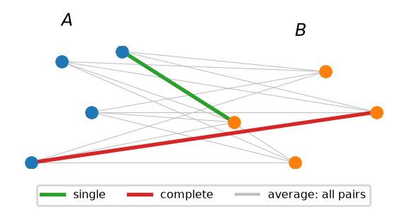
The dendrogram
rng = np.random.default_rng(0)
sub = np.sort(rng.choice(len(Xw_s), 40, replace=False)) # 40 wines, for a readable tree
Lk = linkage(Xw_s[sub], method="ward") # the sequence of merges
fig, ax = plt.subplots(figsize=(4.8, 3.0))
dendrogram(Lk, labels=[f"{c}" for c in yw[sub]], color_threshold=12, ax=ax, leaf_font_size=6)
ax.axhline(12, color="k", linestyle="--", lw=0.8)
ax.set_ylabel("merge distance (Ward)")
_ = ax.set_xlabel("wines (labelled by cultivar, for checking)", fontsize=8)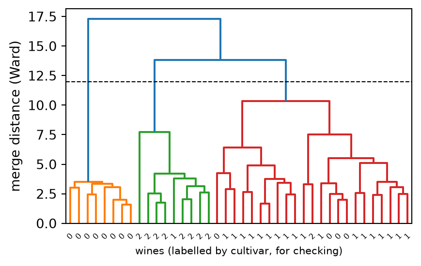
Each U-shape is a merge, drawn at the height of the linkage distance between the two clusters it joins. Cutting the tree at a height (dashed) gives a clustering: here three clusters, which follow the cultivars closely. A long vertical stretch before the next merge means well-separated clusters; the tree shows the structure at every scale, not only for one \(k\).
Cutting the tree
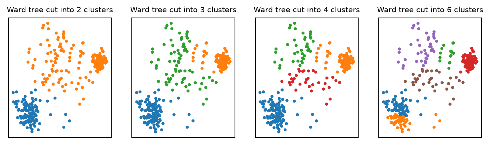
One tree (Ward linkage, the shape with unequal spread), cut lower and lower. Each cut only splits clusters of the cut above, never moves a sample from one cluster to another: the clusterings of one tree are nested. The cut decides how many clusters (n_clusters, or a height with distance_threshold); the shape of the clusters is decided before, by the linkage, through the order of the merges. A different linkage builds a different tree, as the next slide shows.
Linkage matters
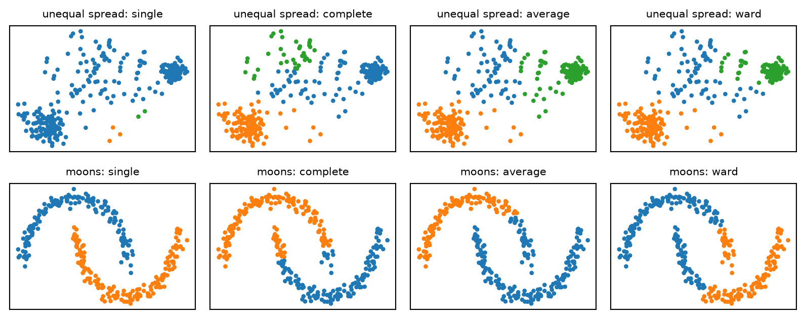
Single linkage joins clusters through their closest points, so it follows chains: it traces the moons perfectly, but on the noisier shape it puts almost everything in one cluster and leaves a few outliers alone (chaining). Complete and Ward prefer compact clusters, like k-means. On wine, Ward finds three clusters close to the cultivars, while single linkage leaves one cluster of 174 wines and two of 3 and 1: the hierarchy is only as good as the linkage suits the data.
Density-based clustering: DBSCAN
DBSCAN (Ester et al., 1996) defines clusters as regions of high density separated by regions of low density. Two parameters, a radius eps (\(\varepsilon\)) and a count min_samples:
- a core point has at least
min_samplespoints (itself included) within distance \(\varepsilon\) - a border point is within \(\varepsilon\) of a core point, but not core itself
- a noise point is neither
A cluster is a set of core points connected through chains of neighbours within \(\varepsilon\), plus their border points. Noise gets the label \(-1\).
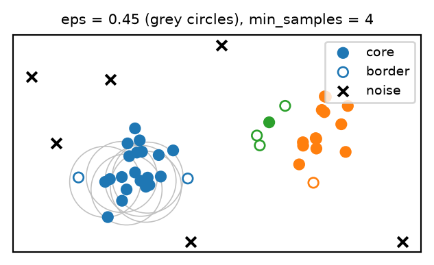
No \(k\) to choose: the number of clusters follows from the density. Clusters can take any shape, and isolated samples are left out instead of being forced into a cluster. The price: one global density threshold for the whole space.
Choosing eps
Xm = shapes["moons"][0]
nn = NearestNeighbors(n_neighbors=5).fit(Xm) # 5 = min_samples (the point itself included)
dist, _ = nn.kneighbors(Xm)
fig, ax = plt.subplots(figsize=(4.2, 2.7))
ax.plot(np.sort(dist[:, -1]))
ax.axhline(0.2, color="C3", linestyle="--", lw=0.8)
ax.axhline(0.3, color="C2", linestyle="--", lw=0.8)
ax.set_xlabel("samples, sorted"); ax.set_ylabel("distance to the 4th neighbour")
_ = ax.set_title("moons: the k-distance plot", fontsize=9)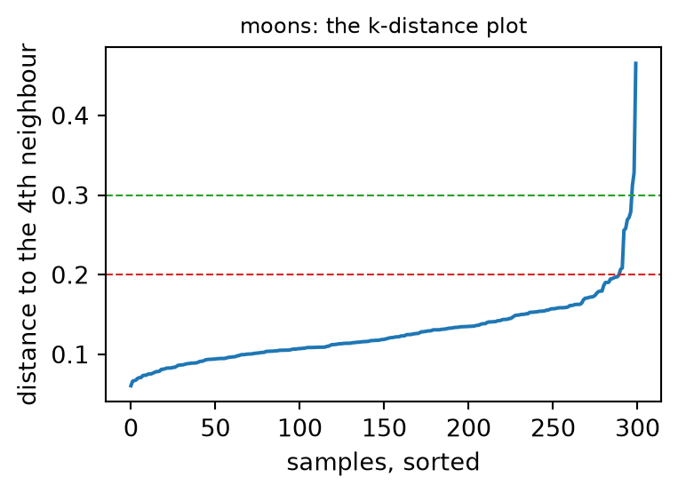
For each sample, the distance to its farthest neighbour among min_samples (the neighbour search of 7a), sorted. Most samples lie in dense regions and have small distances; the curve bends up where the sparse samples begin. At the bend (red, 0.2), DBSCAN finds the two moons but cuts a small third piece off one of them; a little above (green, 0.3), it recovers the two moons with a single sample labelled noise. The bend is a starting point, not an answer. On wine it fails: the values of eps that give three clusters (around 2.1) label a third of the wines as noise. In 13 dimensions distances concentrate (7a) and density is hard to estimate. HDBSCAN (HDBSCAN in scikit-learn) varies the density threshold and removes the need for eps.
Gaussian mixtures
A generative model: each sample is produced by first picking a component \(\ell\) with probability \(\pi_\ell\) (the weights, \(\sum_\ell \pi_\ell = 1\)), then drawing \(\mathbf{x}\) from that component’s Gaussian, with mean \(\boldsymbol\mu_\ell\) and covariance \(\boldsymbol\Sigma_\ell\). The density of the data is the weighted sum, a mixture: \[ p(\mathbf{x}) = \sum_{\ell=1}^{k}\pi_\ell\,\mathcal{N}(\mathbf{x} \mid \boldsymbol\mu_\ell, \boldsymbol\Sigma_\ell) \] In \(d\) dimensions each Gaussian is a bell centred at \(\boldsymbol\mu_\ell\) that decreases with the Mahalanobis distance of its own covariance, \(\mathcal{N} \propto \exp\left(-\tfrac{1}{2}d_M^2(\mathbf{x}, \boldsymbol\mu_\ell)\right)\): its contours are ellipses.
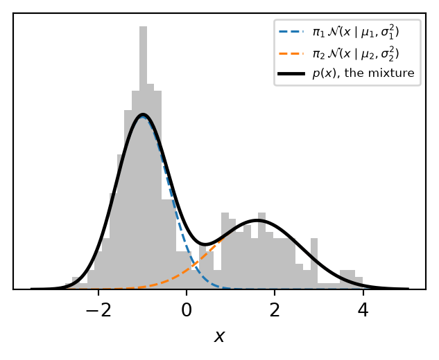
One feature, two components (\(\pi\) = 0.6 and 0.4): a histogram of 400 samples drawn from the model, each weighted Gaussian (dashed) and their sum (black). Unlike k-means, the model has shapes (each component its own spread, and in \(d\) dimensions its own orientation) and gives a density: it can say how likely any sample is.
Soft memberships
At a point \(x\), the mixture density is the sum of the components’ contributions. The share contributed by component \(\ell\) is the probability that a sample at \(x\) came from it (Bayes’ rule, with prior \(\pi_\ell\)), its responsibility: \[
r_{\ell}(\mathbf{x}) = \frac{\pi_\ell\,\mathcal{N}(\mathbf{x} \mid \boldsymbol\mu_\ell, \boldsymbol\Sigma_\ell)}{\sum_{m=1}^{k}\pi_m\,\mathcal{N}(\mathbf{x} \mid \boldsymbol\mu_m, \boldsymbol\Sigma_m)},
\qquad \sum_\ell r_\ell(\mathbf{x}) = 1
\] For a training sample we write \(r_{i\ell} = r_\ell(\mathbf{x}_i)\): the soft version of the 0/1 memberships of k-means. predict_proba returns the \(r_{i\ell}\); predict the component with the largest one.
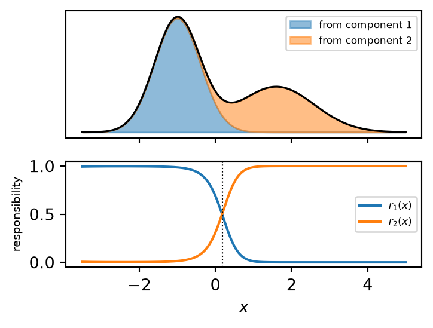
Top: the mixture density split into the two contributions; bottom: their shares. Far from the overlap one component takes all the responsibility; in between the membership is shared, and a hard assignment (dotted line, where both are 0.5) would hide that uncertainty.
The EM algorithm
The parameters are chosen to make the observed data as probable as possible: maximum likelihood. The likelihood is the density of the whole training set under the model, \(\mathcal{L} = \prod_i p(\mathbf{x}_i)\) (samples independent), and we maximise its logarithm, \[ \ln\mathcal{L} = \sum_{i=1}^{n}\ln p(\mathbf{x}_i) = \sum_{i=1}^{n}\ln\sum_{\ell=1}^{k}\pi_\ell\,\mathcal{N}(\mathbf{x}_i \mid \boldsymbol\mu_\ell, \boldsymbol\Sigma_\ell) \] the strategy \(L\) of the method. With the memberships unknown there is no closed form, but the problem splits as in k-means. The expectation–maximisation algorithm (Dempster, Laird and Rubin, 1977) alternates:
- E step: with the parameters fixed, compute the responsibilities \(r_{i\ell}\) (previous slide)
- M step: with the responsibilities fixed, update the parameters as weighted averages; with \(n_\ell = \sum_i r_{i\ell}\), the effective size of cluster \(\ell\): \[ \pi_\ell = \frac{n_\ell}{n}, \qquad \boldsymbol\mu_\ell = \frac{1}{n_\ell}\sum_{i} r_{i\ell}\,\mathbf{x}_i, \qquad \boldsymbol\Sigma_\ell = \frac{1}{n_\ell}\sum_{i} r_{i\ell}\,(\mathbf{x}_i - \boldsymbol\mu_\ell)(\mathbf{x}_i - \boldsymbol\mu_\ell)^\mathsf{T} \]
The likelihood never decreases, and the algorithm converges to a local maximum (so n_init again). k-means is a limit of EM: take all \(\boldsymbol\Sigma_\ell = \sigma^2\mathbf{I}\) and equal \(\pi_\ell\). Then \(r_{i\ell} \propto \exp\left(-\lVert\mathbf{x}_i - \boldsymbol\mu_\ell\rVert^2 / 2\sigma^2\right)\), and as \(\sigma \to 0\) the nearest centroid takes all the weight: \(r_{i\ell}\) becomes 0 or 1, the E step becomes the assignment step and the M step the mean. A Gaussian mixture is k-means with soft memberships and a shape for every cluster.
Mixtures and shapes
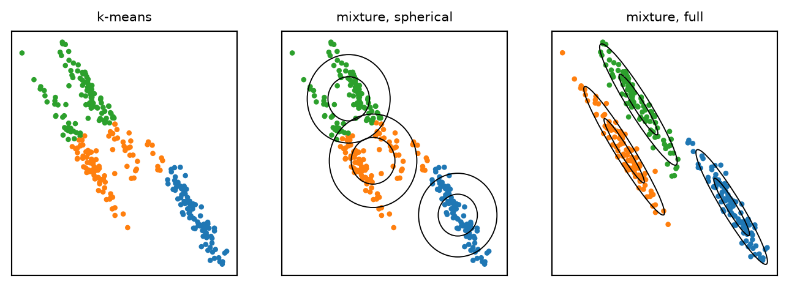
The stretched groups. A mixture with spherical covariances (\(\boldsymbol\Sigma_\ell = \sigma_\ell^2\mathbf{I}\)) behaves much like k-means; with full covariances each Gaussian takes the orientation and elongation of its group (ellipses at 1 and 2 standard deviations) and the groups are recovered. covariance_type sets the number of parameters per cluster: "spherical" (1), "diag" (\(d\)), "tied" (one full matrix shared), "full" (\(d(d+1)/2\) each). More flexible shapes need more data.
How many components?
The number of components \(k\) is a hyperparameter, as \(k\) in k-means. Without labels there is no accuracy to cross-validate, but the likelihood itself can be: fit the mixture on the training folds and measure the log-likelihood of the held-out samples, how probable the model finds data it has not seen (GaussianMixture.score gives the average \(\ln p(\mathbf{x})\) per sample).
On the training data the log-likelihood always increases with \(k\), as \(J\) always fell: more components fit the same samples better. On held-out data it rises, then falls: too many components fit the noise of the training samples (5a).
from sklearn.model_selection import KFold, cross_val_score
cv5 = KFold(5, shuffle=True, random_state=0)
ks = range(1, 7)
train_ll = [GaussianMixture(k, n_init=5, random_state=0).fit(Zw).score(Zw) for k in ks]
valid_ll = [cross_val_score(GaussianMixture(k, n_init=5, random_state=0), Zw, cv=cv5).mean() for k in ks]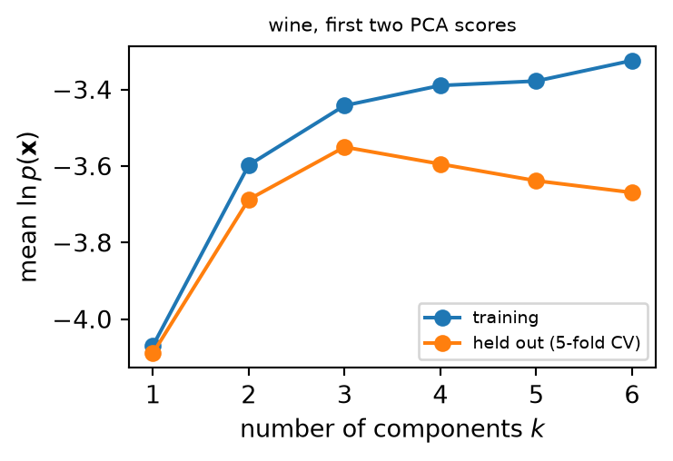
On the first two PCA scores of wine, the held-out log-likelihood is highest at \(k = 3\): the same reasoning as choosing a model by validation (4b), with the likelihood in place of a score.
BIC: a shortcut
Cross-validation refits the mixture \(K\) times for each \(k\). The Bayesian information criterion (Schwarz, 1978) estimates the same trade-off from a single fit on all the data: the fit, minus a price for the number of free parameters \(q\), \[ \mathrm{BIC} = -2\ln\hat{\mathcal{L}} + q\ln n \] where \(\ln\hat{\mathcal{L}}\) is the log-likelihood of the previous slides at the fitted parameters; smaller is better. For full covariances in \(d\) dimensions, \(q = (k - 1) + kd + k\,\frac{d(d+1)}{2}\): the weights, the means, the covariances. The penalty grows with \(q\) and slowly with \(n\): the idea of the penalties of 5a, with a weight fixed by theory instead of by CV.
BIC is lowest at \(k = 3\), in agreement with the held-out likelihood. With all 13 features and full covariances, \(q\) would be 314 for \(k = 3\), against 178 samples: then BIC prefers fewer and simpler components, and covariance_type="diag" is the better choice.
Evaluating clusterings
Two kinds of criteria:
- internal: from \(\mathbf{X}\) alone: inertia, silhouette, BIC. Each favours the kind of cluster its method assumes
- external: against known groups, when we have them (as for wine, or the toy shapes); for checking methods, not in real use, where labels are missing
The Rand index compares two groupings of the same \(n\) samples by looking at all \(\binom{n}{2}\) pairs: a pair agrees if the two samples are together in both groupings or apart in both. The Rand index is the fraction of agreeing pairs. Cluster numbers do not matter, only who is with whom.
But most pairs are “apart” in any grouping with several clusters, so even a random grouping scores high. The adjusted Rand index (Hubert and Arabie, 1985) subtracts what is expected by chance, for random groupings with the same cluster sizes: \[
\mathrm{ARI} = \frac{\mathrm{RI} - \mathbb{E}[\mathrm{RI}]}{\max \mathrm{RI} - \mathbb{E}[\mathrm{RI}]}
\] 1 for identical groupings (up to renaming), about 0 for random ones, negative when worse than chance (adjusted_rand_score).
Methods and shapes
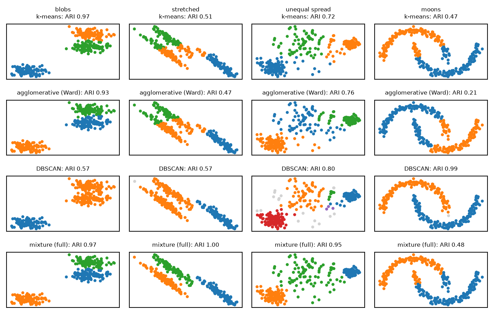
Tip
Take-home. No method wins everywhere. k-means and agglomerative clustering with Ward linkage suit round groups; the full mixture adds orientation and spread, and recovers the stretched and unequal groups (ARI 1.00 and 0.95); DBSCAN alone follows the moons (0.99), but merges groups that touch (blobs, stretched) and leaves the sparse edges of the wide group as noise (grey). Choose the method whose idea of a cluster matches the data, and look at the clusters, not only at a score.
Clustering wine
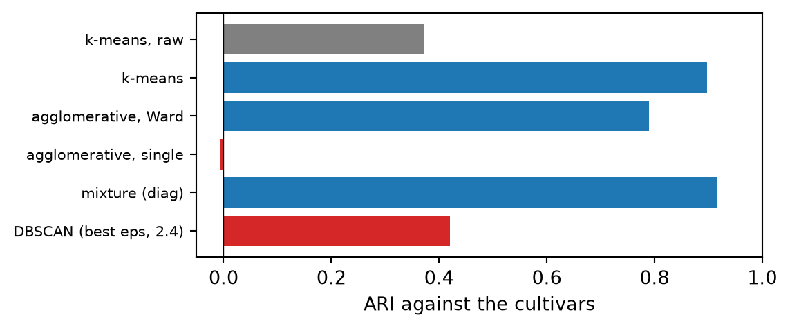
Tip
Take-home. Standardisation is the largest single effect (k-means from 0.37 to 0.90). After it, k-means, agglomerative clustering with Ward linkage and a diagonal mixture all recover most of the cultivar structure (ARI 0.79 to 0.92) without ever seeing a label. Single linkage, built for chains, finds nothing (ARI about 0); DBSCAN, at its best eps, reaches 0.42, with two clusters and a fifth of the wines labelled noise. The mixture uses diagonal covariances: full ones would need more parameters than wine has samples.
Anomaly detection
Samples that do not fit: measurement errors, fraud, faults, rare events. Two settings: outlier detection (anomalies are in the training data) and novelty detection (training data are clean; new samples are judged). Two ideas, each from earlier in the course:
Isolation Forest (Liu, Ting and Zhou, 2008): grow random trees (6a), each split on a random feature at a random threshold, until every sample is alone. An anomaly, far from the rest, is isolated in few splits; a sample inside a dense group needs many. Averaged over many trees (6b), a short path means a high anomaly score.
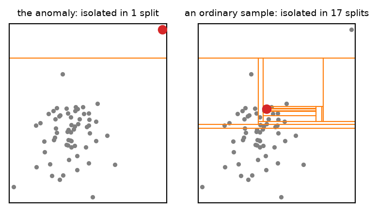
One random tree, followed only along the branch that contains the red sample. The score of IsolationForest normalises the average path length by the average for \(n\) samples, so it lies between 0 and 1 (near 1: anomaly). No distances are computed, so it scales well to many samples and features.
Local outlier factor
LOF (Breunig et al., 2000) compares the density around a sample with the density around its neighbours, both estimated from the distances to the \(k\) nearest neighbours (7a): \[ \mathrm{LOF}(\mathbf{x}) \approx \frac{\text{average density of the } k \text{ neighbours of } \mathbf{x}}{\text{density around } \mathbf{x}} \] About 1 inside any cluster, dense or sparse; well above 1 for a sample in a sparser place than its neighbours. Because the comparison is local, a single threshold works for clusters of different densities, where a global distance cut-off would not.
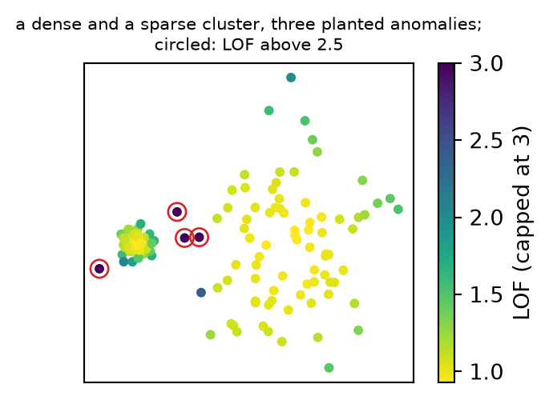
The two points just outside the dense cluster are closer to their neighbours than many ordinary points of the sparse cluster, so a global distance threshold would miss them; LOF flags them (scores above 4) because they are much sparser than their own neighbourhood. The third planted point, above the sparse cluster, scores only 2.0: its neighbours are themselves sparse, so locally it is less unusual. Both detectors give scores; the threshold (contamination) is a decision about the cost of false alarms, as the decision threshold in 4a.
Visualising structure: the digits
The digits of 5b: 1797 handwritten digits, each an \(8 \times 8\) image, i.e. a sample with \(d = 64\) features (the grey level of each pixel, 0–16). Labels exist (the digit), but here they are used only to colour the plots.
Can the ten groups be seen? PCA (5b) gives the best linear view in 2-D: the two directions of largest variance. Some digits form separate regions (0, 6, 4), but most overlap: ten groups do not fit in a linear 2-D projection of a 64-dimensional space.
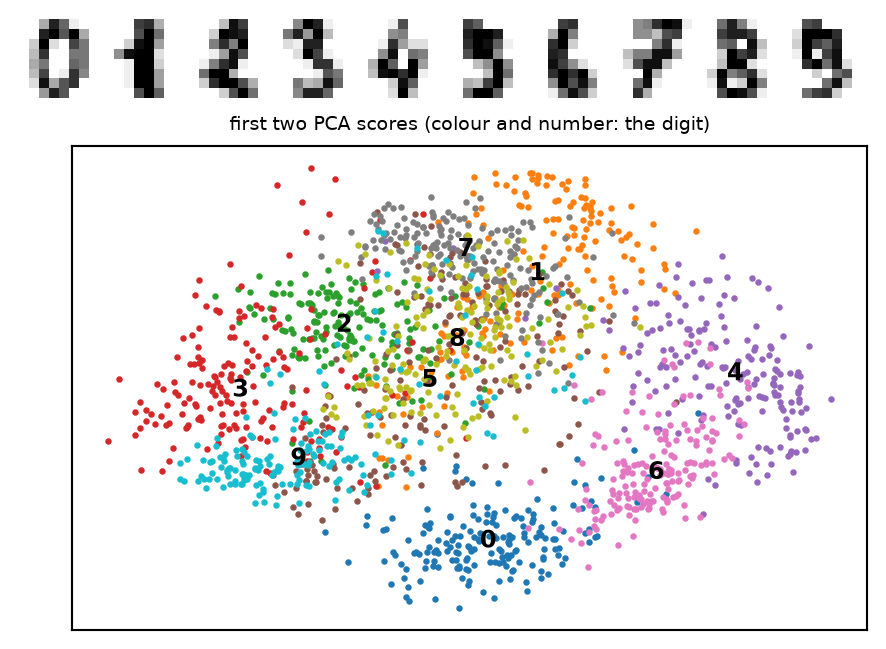
t-SNE
t-SNE (t-distributed stochastic neighbour embedding; van der Maaten and Hinton, 2008) looks for 2-D points \(\mathbf{z}_i\) that keep the neighbours of each sample, not the distances:
- in \(\mathbb{R}^d\): for each pair, a neighbour probability \(p_{ij}\), large when \(\mathbf{x}_j\) is among the nearest samples of \(\mathbf{x}_i\) (a Gaussian of the distance, with its width set so that each sample has about
perplexityeffective neighbours) - in 2-D: the same for the points \(\mathbf{z}_i\), \(q_{ij}\), with a heavy-tailed Student-\(t\) curve in place of the Gaussian (the “t” of t-SNE)
- move the \(\mathbf{z}_i\) by gradient descent until the \(q_{ij}\) match the \(p_{ij}\) (minimising the Kullback–Leibler divergence)
The heavy tails let groups that are far apart in \(\mathbb{R}^d\) move far apart in the map.
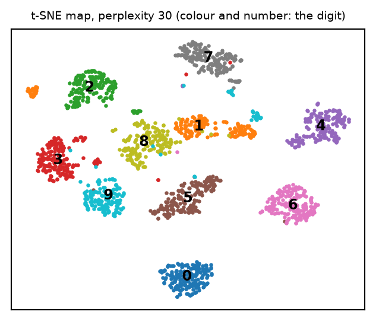
The same 1797 images: t-SNE, which never saw the labels, separates the ten digits into islands. Use it to look, not to model: it has no transform for new samples (so no pipelines), the map changes with perplexity and the seed, and the sizes of the islands and the distances between them mean nothing. UMAP (McInnes et al., 2018, the separate umap-learn package) is a faster relative with the same caveats.
Unsupervised tools in supervised pipelines
In CW2 your data have labels, but unsupervised methods can still help, inside the pipeline, fitted on the training folds only (3b):
- dimensionality reduction:
PCAbefore a distance-based model (5b, 7a) - imputation from similar samples:
KNNImputerfills a missing value with the mean of the \(k\) nearest samples (7a) - cluster features:
KMeansis also a transformer:transformreturns the distances to the \(k\) centroids, new features that describe where a sample lies; or add the cluster label as a categorical feature (3b) - anomalies: flag or remove unusual training samples before fitting; never remove test samples, which must be predicted as they come
- exploration: clusters, silhouettes and t-SNE maps to understand the data before modelling, and to explain errors after
As with every pre-processing step, the choice (whether to use it, \(k\), eps) is a hyperparameter, chosen by cross-validation on the supervised score, inside the pipeline (4b).
Towards representation learning
Today’s methods describe data with a few prototypes, densities or neighbourhoods, all computed in the original features or a linear projection of them. The neural networks of weeks 8–10 learn their own features, and the classical ideas return inside them:
| Classical method | What it represents | Neural counterpart |
|---|---|---|
| PCA (5b) | a linear low-dimensional projection | autoencoder: a non-linear encoder and decoder |
| k-means | discrete prototypes | vector quantisation, learned prototypes |
| kNN (7a) | similarity in the input space | nearest neighbours in a learned embedding space |
| Gaussian mixture | a density of the data | deep generative models |
The question of this lecture, what makes two samples similar, does not go away with neural networks: it moves from the choice of a distance to the choice of a representation, learned from data.
Summary: clustering as (H, L, A)
| Element | k-means | Agglomerative | DBSCAN | Gaussian mixture |
|---|---|---|---|---|
| Model \(H\) | \(k\) centroids; nearest centroid | a tree of merges, cut at a level | dense regions connected by core points | \(k\) weighted Gaussians |
| Strategy \(L\) | inertia \(J\) | greedy merges by linkage | density threshold (\(\varepsilon\), min_samples) |
likelihood |
| Algorithm \(A\) | Lloyd (alternating) | repeated merging | neighbour search | EM (alternating) |
| choose | \(k\) | linkage, \(k\) or height | \(\varepsilon\), min_samples |
\(k\), covariance_type |
| clusters | round, similar size | depends on linkage | any shape, plus noise | ellipses, soft |
| scikit-learn | KMeans |
AgglomerativeClustering |
DBSCAN, HDBSCAN |
GaussianMixture |
All depend on a notion of distance, so on scaling and on the choice of features. Internal criteria (inertia, silhouette, BIC) help choose \(k\); external ones (ARI) only check methods on data whose groups are known.
The methods of weeks 2–7
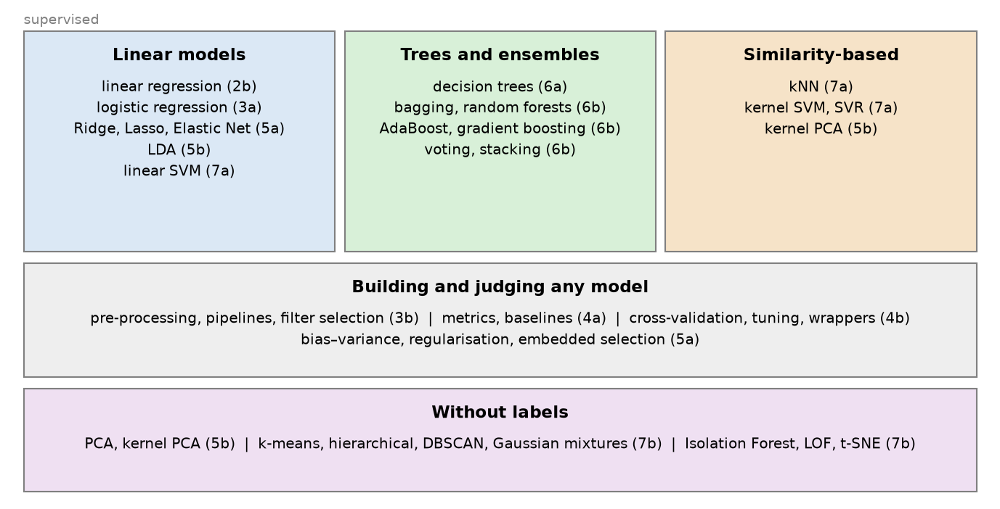
The supervised families differ in their model \(H\); the grey band applies to all of them, and is where most of the work of CW1 and CW2 lies; the unsupervised methods describe \(\mathbf{X}\) itself. Neural networks (weeks 8–10) will join the top row as a fourth family, and reuse the bottom two bands.
What to look for
When you use a clustering method, check:
- that the features are scaled, and chosen with care: the distance defines what “similar” means
- that the method’s idea of a cluster (round, chained, dense, elliptical) suits the data: look at the clusters (PCA scores, t-SNE maps)
- that \(k\),
epsor the linkage were chosen with a stated criterion (elbow, silhouette, BIC, domain knowledge), and how sensitive the result is to it - that k-means and mixtures were run from several starts (
n_init) - for anomaly scores: how the threshold was set, and what a false alarm costs
- that t-SNE maps are used to look, not as features, and not over-interpreted (island sizes and distances)
- in a supervised pipeline: that every unsupervised step is fitted on the training folds only, and its settings chosen by the supervised CV score
Suggested readings and activities
Suggested readings:
- The Elements of Statistical Learning, chapter 14 (unsupervised learning: k-means, hierarchical clustering, mixtures) and section 8.5 (the EM algorithm); the chapter on clustering in Machine Learning with Python.
- The scikit-learn user guide on clustering (with its comparison of methods on toy shapes), Gaussian mixtures and outlier detection; Wattenberg et al., How to use t-SNE effectively.
Suggested activities:
- Run k-means on the wine data after PCA with 2, 5 and 13 components: how does the agreement with the cultivars change?
- Implement one EM iteration by hand for a 1-D mixture of two Gaussians and compare with
GaussianMixture. - Plot the k-distance curve of the wine data: why is there no clear bend?
- Run t-SNE on the digits with perplexity 5, 30 and 100: which features of the map are stable?
Coursework: CW2
For CW2 (2–3 scikit-learn tools on your CW1 dataset, critical comparison, best pipeline: deadlines and the brief on Moodle), today’s concepts can support your analysis:
- clustering and PCA or t-SNE maps to explore your data and explain where models fail
- unsupervised steps inside a supervised pipeline (
KNNImputer,KMeansdistances as features, anomaly flags), fitted on the training folds and judged by the supervised CV score - the role of scaling and of the chosen features in every distance-based method (7a, 7b)
Tip
This closes the first block of the course. Next: artificial neural networks with Jiabao Xu (weeks 8–10), the basis of CW3.

ENG4200 AI4